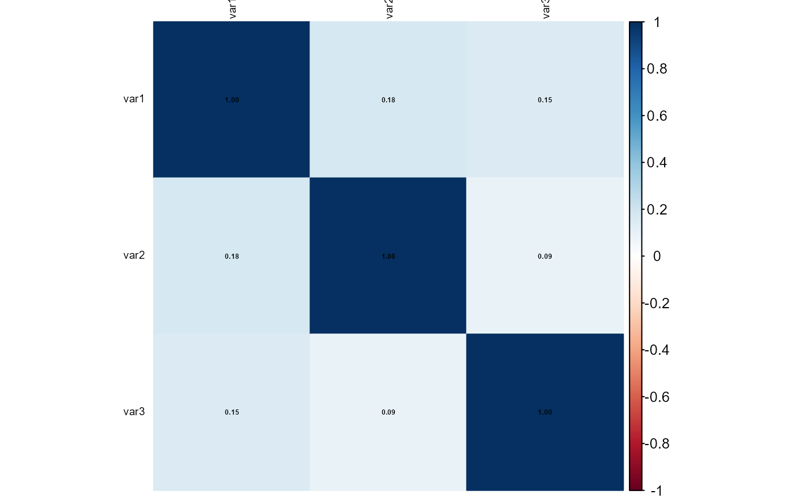

This function identifies and removes variables with high correlation from a dataset. It calculates the correlation matrix, visualizes it (optional), and removes variables exceeding a specified correlation threshold.
Arguments
- data
Data frame containing the variables to analyze.
- cols
Numeric or character vector. Columns to consider for correlation analysis. Defaults to all columns.
- threshold
Numeric. Correlation threshold above which variables are considered highly correlated (default: 0.7).
- plot
Logical. Whether to plot the correlation matrix (default: TRUE).
Examples
# Example dataset
data <- data.frame(
var1 = rnorm(100),
var2 = rnorm(100),
var3 = rnorm(100) + 0.9 * rnorm(100)
)
# Remove highly correlated variables
reduced_data <- rm_correlated(data, threshold = 0.8, plot = TRUE)
#> Loading required package: ggplot2
#> Loading required package: lattice
#>
#> Attaching package: ‘caret’
#> The following object is masked from ‘package:future’:
#>
#> cluster
#> corrplot 0.95 loaded

#> Variables removed due to high correlation:
#> character(0)
#>
#> Variables retained:
#> [1] "var1" "var2" "var3"